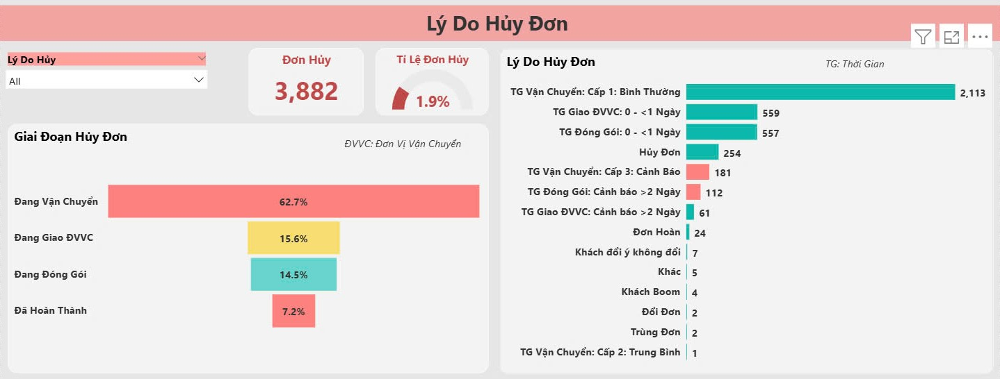

Project objectives
The primary goal of your Order Performance Dashboard is to provide real-
time visibility into order processing and fulfillment efficiency to help
stakeholders make data-driven decisions:
1.Monitor Order Performance:
Track total orders, order value, and order status across different sales channels.
Identify trends in order volume over time.
2.Optimize Fulfillment & Delivery:
Measure packing time and shipping time to identify delays.
Improve logistics efficiency by detecting bottlenecks in the fulfillment process.
3.Reduce Order Cancellations & Improve Customer Experience:
Track cancellation rates and analyze cancellation reasons by time and sales channel.
Identify issues causing high cancellation rates and take corrective action.
4.Enhance Decision-Making with Data-Driven Insights
Where is this project come from?
This project is my hands-on experience with Data Analyst role at my ex - VM STYLE Company.
Let's explore with me!
tools'S MAGIC:
Employing SQL to clean, transform, and analyze a dataset. And using Excel to calculate related measures. Additionally, to enhance the visualization and accessibility of insights, created a dashboard using Power BI.
Chapter 1: Design Thinking
Before creating any report, I usually apply a Design Thinking approach to ensure I fully understand the business problem and user needs. I start by clarifying the goal of the report, identifying who the end users are, and what key questions they need answered. Then I sketch out the key metrics and layout to ensure the report is both insightful and easy to navigate. This approach helps me avoid unnecessary visuals and ensures the report truly supports decision-making.
See how i designed it! 🧠
Chapter 2: Data Cleanup and Transformation
Before diving into the dashboards, meticulous data preprocessing was conducted. Redundant columns were removed, null values were addressed, and duplicates were eliminated. Additionally, columns were appropriately renamed in the Power Query Editor of Power BI, ensuring a clean and organized dataset for insightful visualizations.
Data Model: Star Schema ⭐

Chapter 3: Overview Dashboard
Key Insights:
E-commerce channel has the best performance with
98.2% of orders completed → Customers on E-com
platforms tend to make more stable purchases.
PASS has a higher cancellation rate (~5.2%)
Online Store has the highest cancellation rate (7.1%),
possibly due to customers changing their mind after
placing an order.
High order completion rate (>97%), indicating that the
processing is working effectively.
Ho Chi Minh & Hanoi are the two
largest markets:
Ho Chi Minh City (1.3%) has the lowest cancellation rate, indicating efficient operation and stable delivery.
Northern areas have high cancellation rates:
Cancellation rates are trending steady at around 2.2% - 2.5%.

Chapter 4: Cancellation Dashboard
Key Insights:
62.7% of cancellations occur during the shipping phase → The biggest problem lies in the shipping process, need to work
with shipping companies to shorten delivery times.
Upgrade packaging process: Reduce order preparation time to speed up delivery.

Chapter 5: Leadtime of orders Dashboard
Key Insights:
TikTok has the longest shipping time (6.1 days)
, Snappy has the fastest shipping time (0.8 days)
. Shopee has the largest number of orders (49,531)
but takes an average of 3.6 days
Shipping time is the factor that takes the most time.
Ho Chi Minh City has the fastest average time (3.8 days) with the highest number of orders (34,145 orders).
The 'Not Available' region takes the longest (6.9 days) → This could be due to remote location or system error.
Hanoi, the North, the Central Highlands, the North Central Coast, and Can Tho all have average completion times of 5.7 - 5.8 days.

Chapter 6: ODER PROCESSING TIME ALERT
Time ALERT ⏳ :
I used Excel to calculate alert levels based on shipping time, packaging time, and handover time to delivery partners, relative to the total number of orders by province. I first grouped provinces into key regions, then applied SUM and IF functions to compute processing time and classify it into three alert levels: Level 1 – Normal, Level 2 – Moderate, and Level 3 – Critical.
Key Insights:
"Not available" has a warning rate of 66.8% (extremely high)
North Central (36.9%) & North (36.9%) have high warning rate
Ho Chi Minh has 37.4% of orders warned despite fast average time

Chapter 7: OVERVIEW current orders
The purpose of the current order overview dashboard is to track which stage each order is in — including unprocessed, being packed, in handover to the delivery partner, or in transit — based on the alert time thresholds outlined in Chapter 6. This enables timely decision-making to minimize the risk of order cancellations by customers.

Recommendations:
Improve Order Fulfillment & Delivery Efficiency:
Strengthen order control in areas with high cancellation rates.
Improve delivery efficiency in areas with high cancellation rates.
Adjust faster delivery processes in Binh Thuan and Hanoi to reduce cancellation rates.
Use more reputable shipping units or optimize routes.
Reduce TikTok lead times by improving internal processes or changing shipping partners.
Consider increasing orders through Snappy to optimize speed.
Optimize Logistics & Shipping Processes
Change Delivery Partner or working with them to shorten delivery times.
Upgrade packaging process: Reduce order preparation time to speed up delivery.
Strengthen monitoring of "Unavailable" areas to find out the cause and improve operations.
Closely monitor level 3 orders (delay warning over 5 days) to reduce risk rate.
Leverage High-Performing Regions
Take advantage of Ho Chi Minh City: Since it has a large number of orders and a low cancellation rate, it is possible to expand services or launch additional incentive programs in this area.
Enhance Customer Experience & Reduce Cancellations
Improve customer experience: Update order status regularly so customers don’t worry about delivery times.
Re-evaluate cancellation policy: Check to see if you can reduce the number of cancellations at the packaging stage.